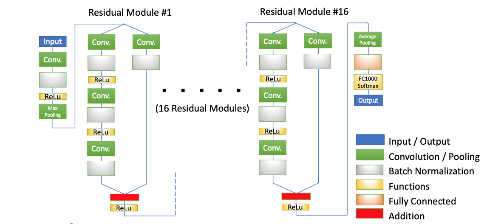
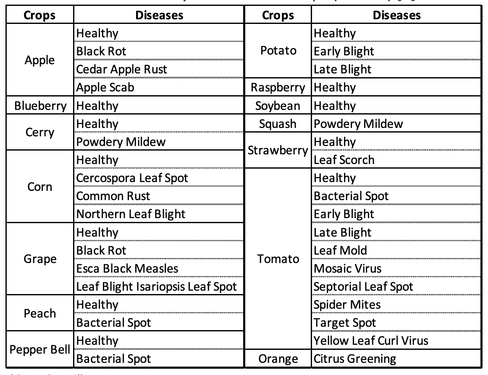
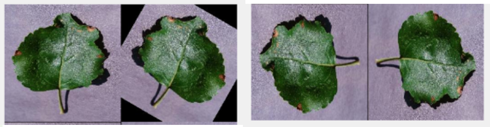
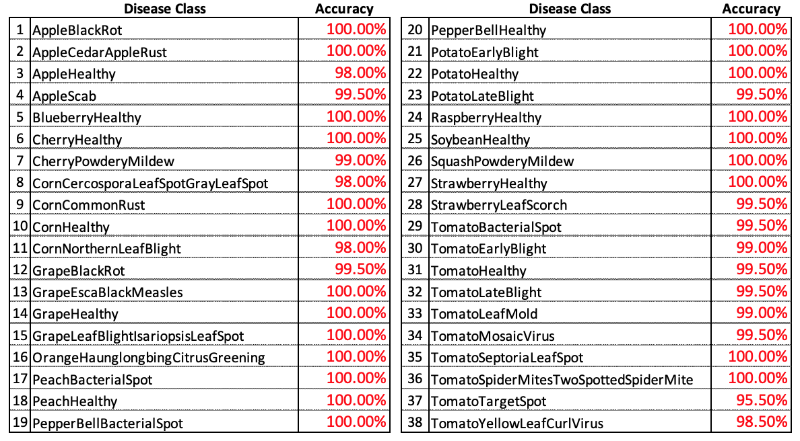
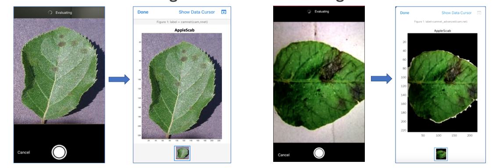

Mobile Plant Disease Detector
SKILLS & KNOWLEDGE
- MATLAB Deep Learning Toolbox
- Convolutional Neural Network
- Residual Network (ResNet50)
- MATLAB Mobile
Aim of Project - ResNet50
Among many Convolutional Neural Networks, Residual Network (ResNet) has been used as the base model for most models that have achieved high recognition accuracy in recent studies. The aim of the project is to train an image classification model for plant diseases with plant leave images using ResNet to prototype a mobile app. The challenge is to develop a practical classifier that can deliver high classification accuracy in recognition of 26 different diseases on the image dataset. The figure below shows the configuration of ResNet50.
Method - Plantvillage Dataset
The PlantVillage dataset is used for training the ResNet50. It includes 26 diseases and 12 healthy classes on 14 crops. Dataset images for each disease class are bulked up by Image Rotation method. 1,000 images for each class are randomly selected, then these are divided into 800 and 200 images for the Training and the Testing, respectively.
 Overall Accuracy
An overall accuracy is 99.5%, and a 100% accuracy is achieved for 22 classes.
Implemented on Mobile Application
The trained model with a 99.5% accuracy has been implemented on iPhone 7 Plus using MATLAB Mobile .
Demonstration Movie
Here is the demonstration with the trained model implemented as a mobile app on a smarphone.
See How You Create Your Own Model
If you want to make your own detector, see and check my Google Clab Note, or
check my GitHub page out.
MOBILE PLANT DISEASE DETECTOR
May 2022, Final Year Project
The aim of the project is to develop a mobile plant disease detector for major diseases appeared on plant leaves,
trained by ResNet50 neural network on MATLAB Deep Learning Toolbox.
My role is to develop and train the neural network model including:
Get in Touch!
If you have any questions, please feel free to drop me a line. if you don't get an answer immediately, I'll get back to you as soon as I can.